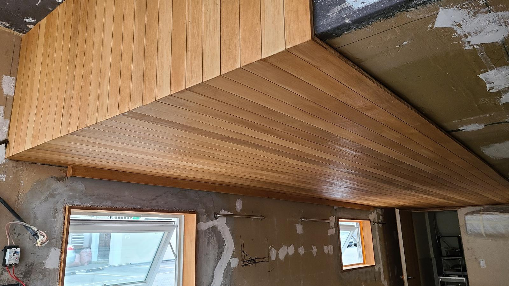
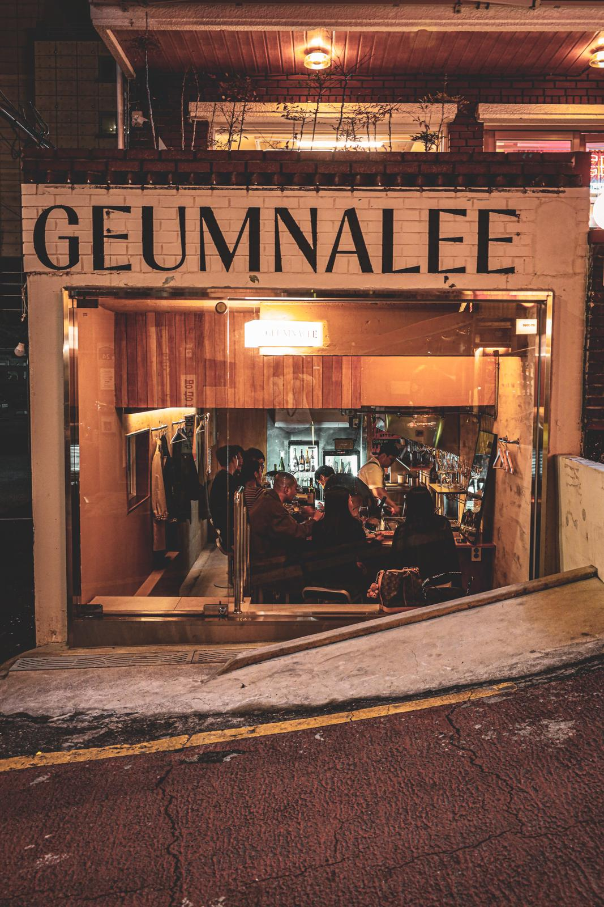
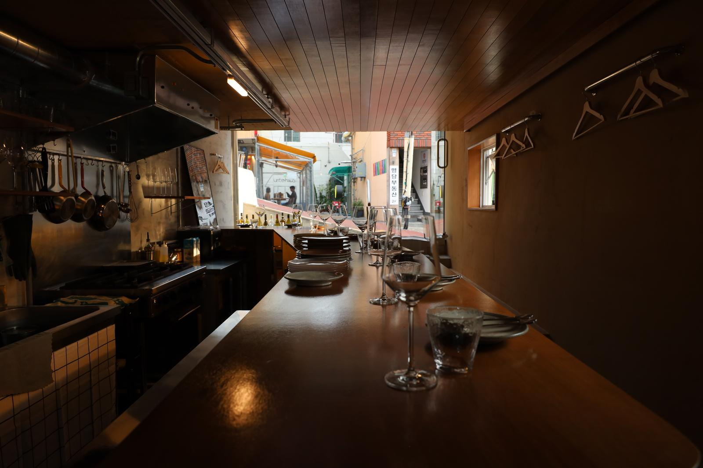
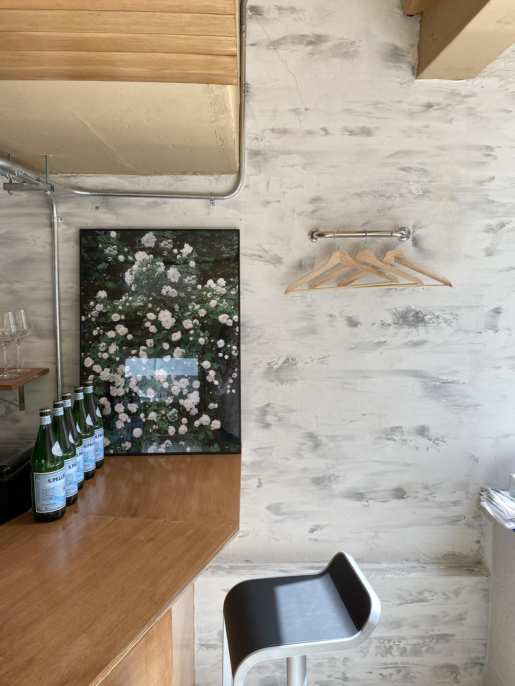

머무는 시간과 브랜드의 분위기를 연결합니다.
와인바의 공간은 단순히 어두운 분위기를 만드는 것을 넘어 고객의 체류, 대화, 서비스 동선과 브랜드가 기억되는 장면을 함께 고려해야 합니다.
공개 범위 안내
이 페이지는 위코컴퍼니 공식 포트폴리오에 수록된 프로젝트의 시각 자료와 분류를 검색 가능한 형태로 정리한 아카이브입니다. 계약상 비공개 정보와 운영 수치는 포함하지 않습니다.
HOSPITALITY · BRAND EXPERIENCE
금나리 와인바의 브랜드 경험과 공간의 장면을 기록한 위코컴퍼니 공개 프로젝트 아카이브입니다.





와인바의 공간은 단순히 어두운 분위기를 만드는 것을 넘어 고객의 체류, 대화, 서비스 동선과 브랜드가 기억되는 장면을 함께 고려해야 합니다.
이 페이지는 위코컴퍼니 공식 포트폴리오에 수록된 프로젝트의 시각 자료와 분류를 검색 가능한 형태로 정리한 아카이브입니다. 계약상 비공개 정보와 운영 수치는 포함하지 않습니다.